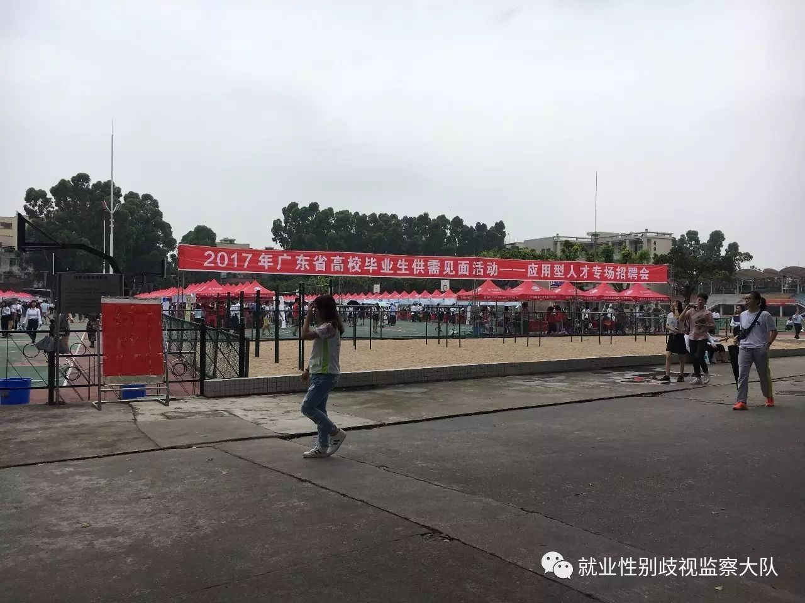
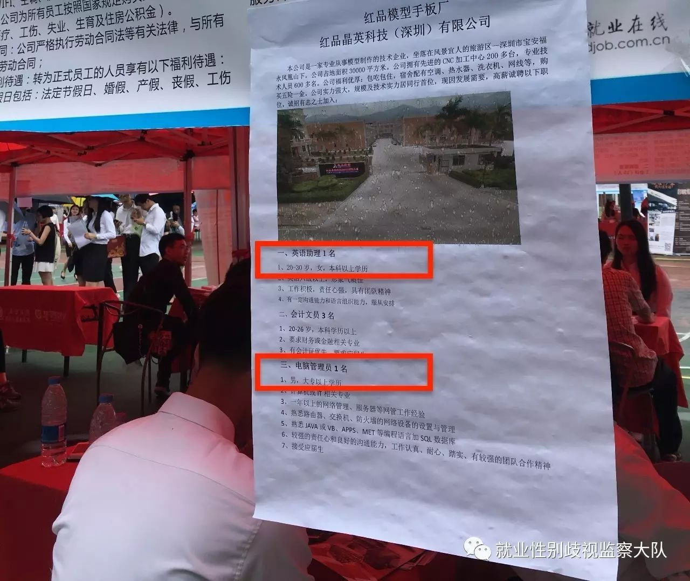
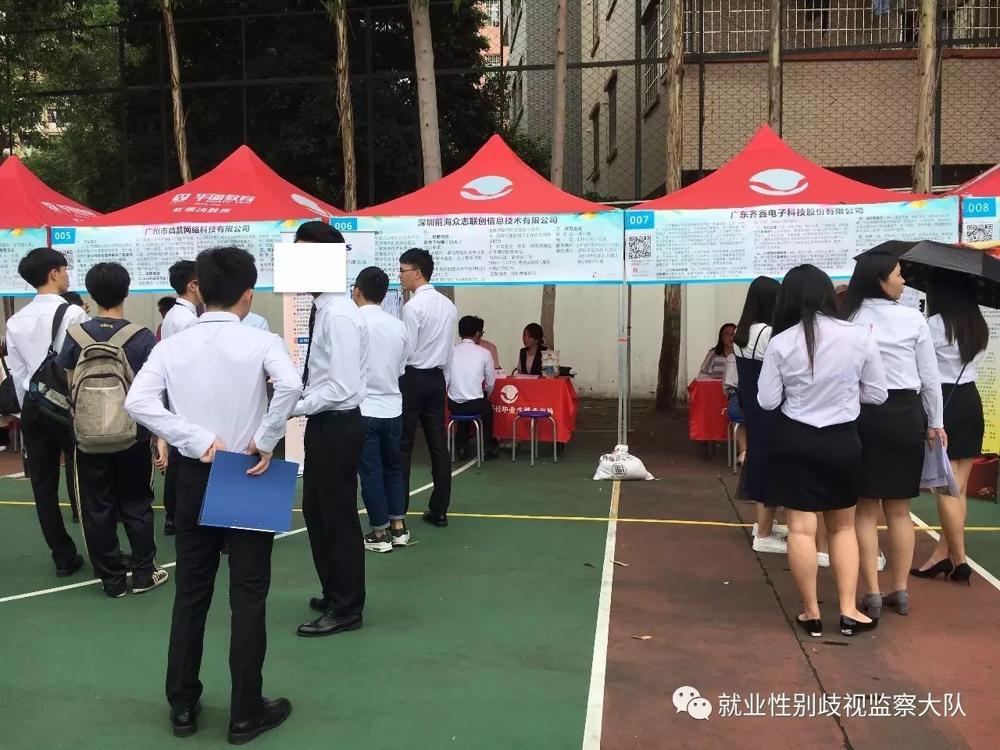

就业性别分工：求职的两列队伍，一列男，一列女
今天（5月19日），广东白云学院举办了“2017应用型人才专场招聘会”。在现场，志愿者却发现共有12家企业，共计22个岗位存在性别歧视现象，其中16个岗位需求为“女性”，6个岗位需求为“男性”。

而此场招聘会的主办、承办、协办单位均赫赫有名：广东省教育厅、广东白云学院、广东省高等学校毕业生就业促进会和广东省大学生创业就业促进会。

这是一场提供近7000岗位的招聘会，求职的同学在讨论、选择着适合自己的岗位，带着满腔热情迎向面试官。可是，却有许多人因为性别被框在了企业限定的岗位中：办公文员、前台、出纳、客服、董事长秘书——限女性；销售代表、生产工、技术员——限男性。

除了显性歧视外，还可以看到泾渭分明的就业性别分工。不同性质的企业，哪怕工作岗位上没有直接写出“限男性”、“限女性”，却仍然按照不同的性别分成两列，一列男，一列女。这很难说是个人的选择。文理分科时，“男生天生理科强”，“女生更适合文科”；选专业时，“男生选建筑工程”，“女生选师范类专业更容易找工作”；找工作时，“这工作很累的，所以只招男生”，“女生以后要生孩子、照顾家庭，还是找个清闲的工作”……这些在就业上的性别分工，不仅遏制了女性，也限制了男性去做真正想要从事的工作。

想起前两天企业给的“限女性”理由：你见过前台有男的吗？我们这里只有前台小姐……可是前台小姐都在18-35岁之间。“限女性”和“限男性”的职位，其前景和薪资待遇，在10年、20年后的差距会越来越大。
现场始终有许多的安保人员和志愿者，但直到招聘会结束，那些涉及性别歧视的招聘广告依然横挂在那里，就好像那是理所应当的。